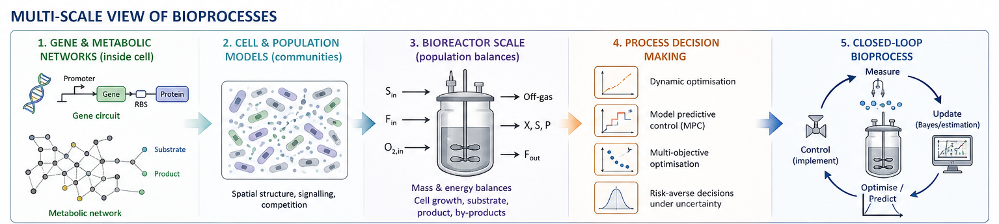

Bioprocess Modelling
Bioprocesses span multiple scales — from gene regulatory networks and metabolic pathways inside individual cells, to populations of interacting microorganisms, to industrial bioreactors operating over hours and days. High-fidelity models at each scale are often too complex to use directly for optimisation or control. My research develops reduced, computationally tractable models that retain the essential mechanistic structure of the underlying biology while being practical tools for decision-making.

Gene & Metabolic Networks
At the smallest scale, I work with metabolic reaction networks and gene circuit models. Genome-scale metabolic networks are far too large for dynamic optimisation — I develop systematic reduction methods based on extreme pathway enumeration and elementary flux modes to obtain compact networks that preserve the essential metabolic capabilities of the organism. At the gene circuit level, I model how synthetic gene circuits and optogenetic inputs interact with host cell metabolism, laying the foundation for the μ4C project on cybergenetic control of bioprocesses.
Cell & Population Models
At the cell and population scale, I work with individual-based models (IbMs) and cybernetic models that capture how microbial communities behave as a collective. IbMs simulate each cell individually, resolving spatial structure and social interactions such as signalling and competition. Because IbMs are computationally expensive, I develop biology-driven complexity reduction strategies — identifying which interactions drive emergent community behaviour and which can be safely neglected.
Bioreactor Scale
At the reactor scale, I build kinetic models based on mass and energy balances that describe how cell growth, substrate consumption, and product formation evolve over time. These models are the workhorses of bioprocess optimisation — compact enough to simulate in milliseconds, yet mechanistically grounded enough to extrapolate beyond training conditions. I have applied these to beer fermentation, algae cultivation, and small-scale biorefineries.
Process Decision Making
Reduced models are only useful if they can support reliable decisions. I close the loop by connecting bioprocess models to dynamic optimisation, model predictive control (MPC), and multi-objective optimisation under uncertainty. This includes risk-averse strategies that account for parametric uncertainty when computing optimal feeding trajectories or control actions — ensuring that decisions remain robust even when the model is imperfect.